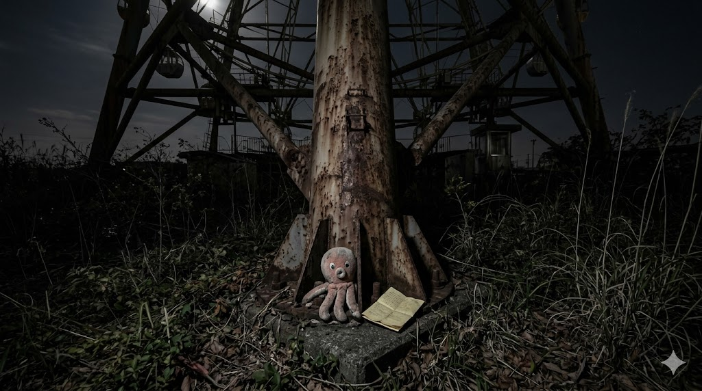

［画像：T沼グリーン██跡・観覧車支柱の根元・夜］
※ photo_kanransha_base.jpg を配置してください
※ photo_kanransha_base.jpg を配置してください

施設が閉まって、何年経ったのか、もう数えていない。
観覧車は、まだ立っている。回らないまま、ずっと立っている。私も、まだここにいる。
今夜、ここに来た理由は一つだ。記録を、隠す場所を決めた。
支柱の根元に、データを埋め込むように、帳面を置く。タコのぬいぐるみと一緒に。首のタグには「№0314」とある。黄ばんで、端が破れかけている。でも、番号は読める。
誰かが来たとき、分かるように。
この印を、最後に刻む。
T湯の帳面に書いた。障子に穿った。そして今夜、支柱に刻む。三か所目だ。
0と1の羅列。●と○の並び。私はここにいた、という印。
帰れると思っていた 帰れなかった。でも、記録は残る。
猫塚清治は、存在した。私が記録した。
私は、存在した。████あなたが読んでいる。